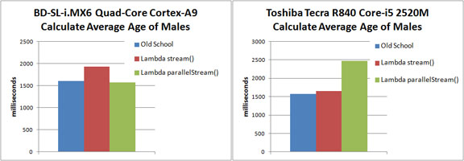
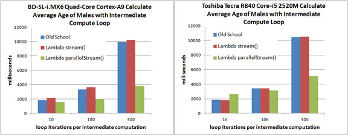

It's been a long road, but Java 8 has finally arrived. Much has been written and said about all the new features contained in this release, perhaps the most important of these is the introduction of Lambda Expressions. Lambdas are now intimately integrated into the Java platform and they have the potential to aid developers in the traditionally tricky realm of parallel programming.
Following closely behind, Compact Profiles promise to open up the tremendous benefits of Java Standard Edition compatibility to embedded platforms previously thought to be too small. Can you see where this is heading? It might be interesting to use these two technologies simultaneously and see how well they work together. What follows is the description of a small program and its performance measurements -- a microbenchmark if you will -- that aims to highlight how programming with the new Lambda Expression paradigm can be beneficial not only for typical desktops and servers, but also for a growing number of embedded platforms too.
The Hardware/OS Platform(s)
Of primary interest for this article is the Boundary
Devices BD-SL-i.MX6 single board computer. It is a
quad-core ARM® Cortex™-A9 based system with 1GB RAM running an armhf
Debian Linux distribution. At the time of this article's
publication, its list price is US $199.
What makes it more interesting is that we'll not only run Java 8 Lambda Expressions on device, we'll do it within the confines of the new Java 8 Compact1 profile. The static footprint of this Java runtime environment is 10½ MB.
A second system, altogether different in capability and capacity
from our embedded device will be used as a means to compare and
contrast execution behavior across disparate hardware and OS
environments. The system in question is a Toshiba
Tecra R840 laptop running Windows 7/64-bit. It has a
dual-core Intel® Core™ i5-2520M processor with 8GB RAM and will
use the standard Java 8 Runtime Environment (JRE) for Windows
64-bit.
The Application
Looking for a sample dataset as the basis for our rudimentary application, this link provides an ideal (and fictional) database of employee records. Among the available formats, a comma-delimited CSV file is supplied with approximately 300,000 entries. Our sample application will read this file and store the employee records into a LinkedList<EmployeeRec>. The EmployeeRec has the following fields:
public class EmployeeRec {
private String id;
private String birthDate;
private String lastName;
private String firstName;
private String gender;
private String hireDate;
...
}
With this data structure initialized, our application is asked to perform one simple task: calculate the average age of all male employees.
Old School
First off let's perform this calculation in a way that predates the availability of Lambda Expressions. We'll call this version OldSchool. The code performing the "average age of all male employees" calculation looks like this:
double sumAge = 0;
long numMales = 0;
for (EmployeeRec emp : employeeList) {
if (emp.getGender().equals("M")) {
sumAge += emp.getAge();
numMales += 1;
}
}
double avgAge = sumAge / numMales;
Lamba Expression Version 1
Our second variation will use a Lambda expression to perform the identical calculation. We'll call this version Lamba stream(). The key statement in Java 8 looks like this:
double avgAge = employeeList.stream()
.filter(s -> s.getGender().equals("M"))
.mapToDouble(s -> s.getAge())
.average()
.getAsDouble();
Lambda Expression Version 2
Our final variation uses the preceding Lambda Expression with one slight modification: it replaces the stream() method call with the parallelStream() method, offering the potential to split the task into smaller units running on separate threads. We'll call this version Lambda parallelStream(). The Java 8 statement looks as follows:
double avgAge = employeeList.parallelStream()
.filter(s -> s.getGender().equals("M"))
.mapToDouble(s -> s.getAge())
.average()
.getAsDouble();
Initial Test Results
The charts that follow display execution times of the sample problem solved via our three aforementioned variations. The left chart represents times recorded on the ARM Cortex-A9 processor while the right chart shows recorded times for the Intel Core-i5. The smaller the result, the faster, both examples indicate that there is some overhead to utilizing a serial Lambda stream() over and above the old school pre-Lambda solution. As far as parallelStream() goes, it's a mixed bag. For the Cortex-A9, the parallelStream() operation is negligibly faster than the old school solution, whereas for the Core-i5, the overhead incurred by parallelStream() actually makes the solution slower.

Without any further investigation, one might conclude that
parallel streams may not be worth the effort. But what if
performing a trivial calculation on a list of 300,000 employees
simply isn't enough work to show the benefits of
parallelization? For this next series of tests, we'll
increase the computational load to see how performance might be
effected.
Adding More Work to the Test
For this version of the test, we'll solve the same problem, that
is to say, calculate the average age of all males, but add a
varying amount of intermediate computation. We can variably
increase the number of required compute cycles by introducing the
following identity method to our programs:
/*
* Rube Goldberg way of calculating identity of 'val',
* assuming number is positive
*/
private static double identity(double val) {
double result = 0;
for (int i=0; i < loopCount; i++) {
result += Math.sqrt(Math.abs(Math.pow(val, 2)));
}
return result / loopCount;
}
As this method takes the square root of the square of a number, it is in essence an expensive identity function. By changing the value of loopCount (this is done via command-line option), we can change the number of times this loop executes per identity() invocation. This method is inserted into our code, for example with the Lambda ParallelStream() version, as follows:
double avgAge = employeeList.parallelStream()
.filter(s -> s.getGender().equals("M"))
.mapToDouble(s -> identity(s.getAge()))
.average()
.getAsDouble();
A modification identical to what is highlighted in red above is
also applied to both Old School and Lambda Stream()
variations. The charts that follow display execution times
for three separate runs of our microbenchmark, each with a
different value assigned to the internal loopCount
variable in our Rube Goldberg identity() function.

For the Cortex-A9, you can clearly see the performance advantage of parallelStream() when the loop count is set to 100, and it becomes even more striking when the loop count is increased to 500. For the Core-i5, it takes a lot more work to realize the benefits of parallelStream(). Not until the loop count is set to 50,000 do the performance advantages become apparent. The Core-i5 is so much faster and only has two cores; consequently the amount of effort needed to overcome the initial overhead of parallelStream() is much more significant.
Downloads
The sample code used in this article is available as a NetBeans project. As the project includes a CSV file with over 300,000 entries, it is larger than one might expect. The blogs.oracle.com site prohibits storing files larger than 2MB in size so this project source has been compressed and split into three parts. Here are the links:
Just concatenate the three downloaded files together to recreate the original LambdaMicrobench.zip file. In Linux, the command would look something like this:
Conclusion$ cat LambdaMicrobench.zip.part? > LambdaMicrobench.zip
A great deal of effort has been put into making Java 8 a much
more universal platform. Our simple example here
demonstrates that even an embedded Java runtime environment as
small as 10½ MB can take advantage of the latest advances to the
platform. This is just the beginning. There is lots
more work to be done to further enhance the performance
characteristics of parallel stream Lambda Expressions. We
look forward to future enhancements.